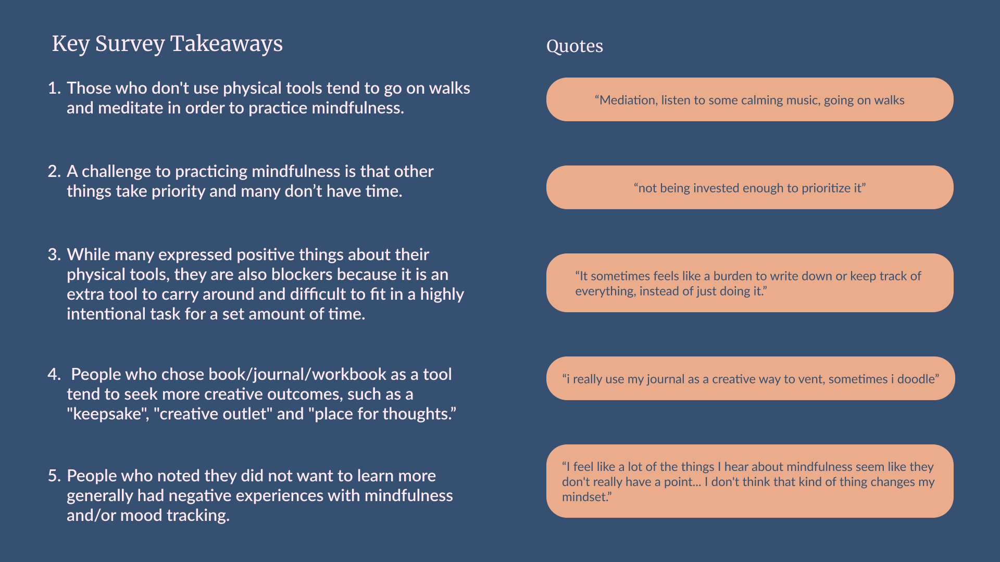

Table of Contents
Introduction
This case study documents the planning, researching and analysis phases of UX research focused on mindfulness and mood tracking. This project occured over a period of two months for a class at Washington University in St. Louis. Students were presented with a brief and guided through a research process to complete individually.
The Brief
"You have joined a team that is setting out to better understand some core challenges, goals, and needs that people have when it comes to maintaining wellness, with a particular focus on mood and mindfulness. Your team is still in the early stages of understanding the problem space and would like to start with a user research-informed design process. You will lead a UX research and strategy process to better understand the unique needs, goals, pain points, frustrations, and areas of opportunity for people who are looking to better track their moods and/or practice mindfulness, and to identify appropriate approaches for addressing the core challenges."
Relevant Assumptions and Constraints
- I assume stressed/anxious students have a goal of fitting mindfulness into their busy schedules.
- I assume it’s hard to find time to practice mindfulness.
- I assume it will be hard for users to build a habit of mindfulness and thus return to the product.
- I am constrained to a short timeline.
- I am constrained by the amount of resources and people I have access to.
Research Goals
- Understand users' goals and pain points with current mindfulness tools
- Learn why users find mindfulness valuable
- Learn what methods users use to practice mindfulness and mood tracking
- Identify students’ goals towards mindfulness and mood tracking
Secondary Research
I analyzed three competitors and one research paper in order to educate myself on mindfulness and learn what solutions currently exist in the market. An Exploration of Formal and Informal Mindfulness Practice and Associations with Wellbeing (Birtwell, K., Williams, K., van Marwijk, H. et al), a research article on mindfulness, supports the assumption that people have trouble continuing to practice mindfulness. It also offered explanations as to why people have these challenges. For example, some fall asleep during practice. Next, I took a deep dive into two direct competitors, Insight Timer and Mindfulness Coach, and one indirect competitor, Garmin Connect. As I read reviews and took myself through a user journey in each app, I found strengths and weaknesses from each product.

- Live events
- Guided approach
- Education based
- Easy to view data
- No guidance
- Wordy and intimidating
I learned that mindfulness is presented in various forms, so I decided to focus the rest of my research on discovering how people prefer to view and practice mindfulness.
Primary Research
Surveys
Using my goals and secondary research as a guide, I developed an 11 question survey on Google Forms which I distributed across campus, receiving 16 responses. I asked about users experience with mindfulness and mood tracking, as well as targeted some likes and dislikes. Conducting a survey allowed me to search for trends among users.
Interviews
In addition to surveys, I interviewed three college-aged friends for about 30 minutes. One occured on Face Time, while the others were in person. Interviews provided detailed and personal experiences with mindfulness.
Analysis
Survey Takeaways
In order to analyze survey results, I read through responses and sorted them by response. I looked for trends and deducted five takeaways:
Thematic Network Analysis
In order to analyze the interviews I created a map of themes. After transcribing the interviews, I coded them by mapping quotes to specific keywords. Once I had the coded data, I grouped quotes by basic themes, then grouped basic themes in order to create organizing themes. I created this network in order to break down the transcripts in a comprehensible way and find insights to inform the next steps of the analysis process.

Personas
The next step was to create two personas so that I could further analyze my research. I separated takeaways from the earlier steps into two groups in order to distinguish two separate personas.
AnitaAnita is a college student who wants to incorporate regular mindfulness practices in her life. She leans into physical tools, such as her journal, and sets goals to be mindful every day. While her journal is an important creative outlet, it is a burden to carry around and difficult to fit in to her day. Often, other activities take priority and she runs out of time to be mindful.
 Eric
Eric
Eric is a college athlete who values self reflection in order to hone his skills. He thinks mindfulness is important, but does not enjoy using physical tools, such as apps or journals, because they feel forced.

User Journeys
The final step of analysis was to create a user journey for each persona in order to discover opportunities for improvement.
AnitaAnita's user journey demonstrates her discovery of journaling and attempt to incorporate it into her life. She is excited to start journaling but gets frustrated when she can't keep up the practice. Anita's journey highlights some opportunities for improvement:
- Providing mindfulness education to help kickstart the process
- Creating fillable pages to guide the user
- Decreasing the size of the journal to make it easier to transport
- Help users set realistic goals
In Eric's journey, he is encouraged to use a mindfulness app by his coach, but is left feeling annoyed as he forces himself on the app. Some additional opportunities for improvement as shown by Eric are:
- Again, providing education so users understand the purpose
- Developing personalized features that resonate with users
- Expanding the functionality of mindfulness apps to be relevant to a wider audience
Conclusions
This case study revealed the range of practices users may partake in when being mindful and why they may like or dislike certain aspects of mindfulness tools. It would be important for a company working on a mindfulness product to understand the wide range of needs of their users.
In doing this project, I learned how to conduct UX research. In the future, I would adjust my survey to include more scale based question, making it more appealing to users and easier to spot trends. In addition I would dig deeper into my survey and interview takeaways in order to create more detailed personas and slightly more relevant user journeys. Overall, I gained an understanding of planning, researching and analyzing UX research.